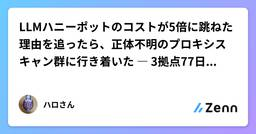
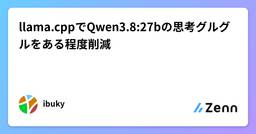
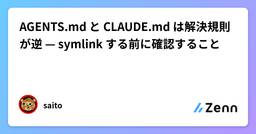
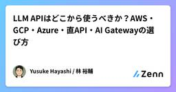
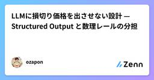
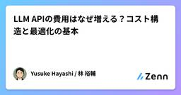
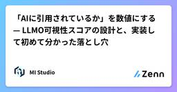
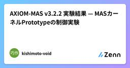

Zennの「大規模言語モデル」のフィード
フィード

LLMハニーポットのコストが5倍に跳ねた理由を追ったら、正体不明のプロキシスキャン群に行き着いた ― 3拠点77日間の実測
Zennの「大規模言語モデル」のフィード
Galah は LLM を使って HTTP リクエストへの応答を動的に生成するハニーポットだ。任意のパスへのリクエストに対して、それらしいレスポンス（ヘッダ・ボディ）を LLM に生成させる。手作業でアプリを模倣する従来型ハニーポットと違い、事前に想定していないパスへのアクセスにもそれらしく応答できるのが売りだが、これは「1リクエスト = 1回の LLM 推論」というアーキテクチャでもある。開発元自身がこの点を README で認めている。Galah was developed as a fun weekend project to explore the capabilities...
7時間前

llama.cppでQwen3.8:27bの思考グルグルをある程度削減
Zennの「大規模言語モデル」のフィード
詳細は追記しますCUDA_VISIBLE_DEVICES=0,1 ./llama-cli --model ~/unsloth/Qwen3.8-27B-GGUF/Qwen3.8-27B-Q4_0.gguf --temp 1.0 --top-p 0.95 --top-k 20 --min-p 0.0 -ngl 999 --reasoning-effort low--reasoning-effort lowで推論の長さを調整
7時間前
RTX 5090でFreeTokenを試してみた。35Bでは不要、120B級MoEでは話が変わる 2
2
Zennの「大規模言語モデル」のフィード
2026年8月22日時点のFreeToken 0.1.2を、RTX 5090 32GBとRAM 128GBのPCで試しました。FreeTokenは、Mixture-of-Experts（MoE）モデルのexpertをホストRAMへ置き、必要なexpertだけをGPUへキャッシュしながら推論するサービングエンジンです。狙いはvLLMやllama.cppを単純に高速化することではなく、VRAMに収まらない巨大なMoEをコンシューマ向けGPUで実用速度で動かすことにあります。実際に試すと、この立ち位置がかなり明確に出ました。23.5GBのOrnith 1.5ではllama.cppとvLLM...
7時間前

AGENTS.md と CLAUDE.md は解決規則が逆 — symlink する前に確認すること
Zennの「大規模言語モデル」のフィード
AGENTS.md を置いているリポジトリで Claude Code も使いたい。検索すると ln -s AGENTS.md CLAUDE.md が出てきて、実際これは公式が案内している手順です。ただし、この1行で繋がるのはルートの1ファイルだけです。そして繋いだ先の Claude Code は、AGENTS.md とは逆の規則でファイルを解決します。モノレポで nested な AGENTS.md を使っている場合、ここが実務的な落とし穴になります。 3行でAGENTS.md は「最も近い1つが勝つ」、CLAUDE.md は「見つかった全部を連結する」。上書きと累積で...
7時間前

LLM APIはどこから使うべきか？AWS・GCP・Azure・直API・AI Gatewayの選び方
Zennの「大規模言語モデル」のフィード
LLMを業務システムへ導入するとき、「どのモデルが一番よいか」だけを考えると、選択を誤ることがあります。同じClaudeでも、Anthropicの直API、Amazon Bedrock、Vertex AI、Microsoft Foundry、AI Gateway経由では、契約、処理基盤、利用できる機能が同じとは限らないからです。モデル選定では、どのモデルを使うかとどの経路から使うかを分けます。この記事では2026年8月22日時点の公式情報をもとに、AWS、GCP、Azureを中心とする企業がLLM APIを選ぶための全体像を整理します。 モデル名だけでは利用条件は決まらない...
8時間前

LLMに損切り価格を出させない設計 — Structured Output と数理レールの分担
Zennの「大規模言語モデル」のフィード
TL;DRGMOコインFX の予約型自動売買(AWS Lambda + Python)で、損切り価格・利確価格・ロットを LLM に出させず、Python が式で算出する設計にしました損切り価格は当初から Python です。LLM に残したのは方向・エントリー価格と、損切り幅の広さを選ぶ離散ノブ(狭い / 広い)まで。利確価格も Structured Output のスキーマから消し、損切り幅から組み立てますプロンプトで「正しいリスクリワード比(以下 R:R。損切り幅に対する利確幅の比)を出せ」と頼むのではなく、不正な価格の組が構造的に生成されないようにするのが本記事の要点...
8時間前

LLM APIの費用はなぜ増える？コスト構造と最適化の基本
Zennの「大規模言語モデル」のフィード
生成AIを業務へ組み込むと、しばしば「思ったよりAPI費用が高い」という問題が起きます。そこで安いモデルへの変更を考えがちですが、LLMの費用はモデルの価格だけでは決まりません。AIへ送る文章が長い、一つの仕事で何度もAIを呼ぶ、失敗した処理を繰り返す。このような設計上の要因でも費用は増えます。反対に、安いモデルへ変更して再質問や人による修正が増えれば、APIの請求額が下がっても業務全体では高くなることがあります。この記事では、LLM APIの費用が発生する仕組みを分解し、何から改善すべきかを説明します。 LLM APIはシステムの一部LLM（Large Language...
9時間前

「AIに引用されているか」を数値にする — LLMO可視性スコアの設計と、実装して初めて分かった落とし穴
Zennの「大規模言語モデル」のフィード
検索エンジンの順位は昔から測れました。では、ChatGPTやPerplexityが回答の中で自社サイトを引用しているかどうかは、どう測ればいいのでしょうか。順位のように1本の数字が返ってくるわけではありません。同じ質問を投げても回答は毎回変わりますし、そもそも「引用された」の定義自体が曖昧です。回答文中にURLが出典として並ぶこともあれば、社名だけが本文に出てURLはないこともあります。この記事は、その曖昧なものを0〜100のスコアに落とすツールを実装したときの設計と、動かして初めて気づいた失敗を書いたものです。 何を「引用」と数えるかまず引用を3種類に分けました。種別...
9時間前
Claude Codeについて学んだことの備忘録
Zennの「大規模言語モデル」のフィード
はじめに社内プロジェクトでClaude CodeなどのAIエージェントコーディングを始めることになりました。強力なツールである一方、使い方を間違えればプロジェクトやシステムに取り返しのつかない影響を与えうる諸刃の剣でもあります。だからこそ、まずは公式ドキュメントを一通り読んで基礎知識を整理しておくことが大事だと思いました。この記事はその インプットのアウトプット です。誰かに教えるというより、未来の自分が「あれ、これどうだっけ」となったときに戻ってくるための備忘録として書いています。読んだのは主に以下の3つです。Claude Codeの仕組みClaude Codeを...
11時間前

LLMはなぜ言葉を扱えるのか？
Zennの「大規模言語モデル」のフィード
■はじめにChatGPTやClaudeを日常的に使うようになり、あらためて「LLMはなぜ人間の言葉を返せるのだろう？」と疑問に思いました。TransformerやEmbedding、パラメーターといった用語は知っていても、それぞれがどうつながり、LLM全体の中でどのような役割を持っているのか、うまく説明できないことに気づきました。そこで本記事では、自分自身の備忘も兼ねて、入力された文章がLLMの内部でどのように処理され、再び人間が読める言葉として返されるのかを基礎から整理します。できるだけ専門用語をかみ砕き、エンジニアではない方にも処理のイメージが伝わる説明を目指します。...
11時間前
AIエージェント設計論 — Harness/Loop EngineeringからRAGまで
Zennの「大規模言語モデル」のフィード
AIエージェント開発を支える設計思想を、Harness EngineeringとLoop Engineeringという二本柱から出発し、Evaluation・Context Engineering・Tool Engineering・Memory・Observability・Recovery Engineering・Human-in-the-loop・A2A・実務導入・RAG/ローカルLLMまで、16章で体系的に整理する。LLMの性能だけでは測れない「AIが賢く働ける環境と改善ループの設計」を、実装レベルの視点でまとめた一冊。
12時間前

無料枠だけでClaude Codeをターミナルで動かす — ぶつかった2つの壁と回避策
Zennの「大規模言語モデル」のフィード
結論：無料プロバイダを束ねればClaude Codeは無料で動く。ただし壁が2つある各社が配っている無料APIをまとめて束ね、Claude Codeの「頭脳」をそこに差し替える。これでサブスク枠を使わずにターミナルのClaude Codeが動きます。ただし、素直につないだだけでは動きません。「大きな入力を弾く壁」と「大きな出力を弾く壁」の2つにぶつかります。この記事は、実際に手元のMacで詰まった箇所と、その回避策を残すものです。使ったのは Free Claude Code（以下FCC）というツールです。コーディングエージェントを、OpenAI互換の各種プロバイダにつなぐローカル...
12時間前

Grok 4.5はCursorの操作ログで訓練された、出力トークンが約4分の1になった
Zennの「大規模言語モデル」のフィード
7月8日に出たGrok 4.5で、いちばん引っかかったのはベンチマークの数字ではなかった。訓練データの出どころだ。xAI（発表では SpaceXAI 名義）はこのモデルを Cursor と共同で訓練し、その材料に「数兆トークン規模の Cursor 上の操作データ」を使ったと明言している。GitHub に転がっている完成済みのコードではなく、開発者がエディタの中で実際にコードを書いていく過程そのものを学ばせた、というのが今回の芯だ。新モデルのたびに「Opus 級」「GPT 級」と横並びのスコアが飛び交うが、Grok 4.5がおもしろいのは強さのピークではなく、同じ仕事を圧倒的に少ないトー...
15時間前

AXIOM-MAS v3.2.2 実験結果 — MASカーネルPrototypeの制御実験
Zennの「大規模言語モデル」のフィード
はじめにAXIOM-MASは、LLMそのものを賢くするのではなく、LLMを交換可能な推論部品として扱い、その外側に制御カーネルを置くことを目的としたMAS Prototypeです。一般的なMASが「複数のLLMを協調させて答えを作る」方向に重点を置くのに対し、AXIOM-MASでは、AbsoluteAnchor / HashAによる不変座標HashBによる推論軌跡Capsuleによる状態管理Monitorによる逸脱監視仮組み → 照合 → 本組みを組み合わせ、「何を考えたか」だけでなく「制約から逸脱していないか」をカーネル側で観測することを狙っています。本稿では、A...
1日前
SAPO: 1ロールアウト自己回帰Actor-CriticでAgent RLの壁を突破
Zennの「大規模言語モデル」のフィード
TL;DRLLMエージェントの強化学習において、PPOは高精度だが別途Criticモデルのメモリが必要で、GRPOはメモリ効率が良いが長期タスクでadvantage collapseに陥る——この二律背反を**SAPO（Single-rollout Autoregressive Policy Optimization）**が一発で解消する。鍵は「自己回帰モデルの因果的境界を利用して、1つのバックボーンでPolicy・V・Qを同時に表現する」という設計。ALFWorld × Qwen2.5-1.5BでPPO +35.7pp、GRPO +17.3pp。1回のロールアウトのみでCriti...
1日前

X自動投稿AI-Workflowの改善ループ設計
Zennの「大規模言語モデル」のフィード
はじめに前回、個人開発者向けのX投稿自動投稿「AgentMark」を作った話を書きました。自動投稿まで実装したので、次はこのAI-Workflowを改善することについて考えて実装したので、まとめたいと思います。勉強を兼ねての側面が大きいですが、少しでも参考になれば幸いです。https://github.com/rikky300/marketing_agent 何をどう改善すればいいのかこのワークフローには、BERTをファインチューニングした採点モデルを組み込んでいます。このAgentMarkの採点モデル（自前BERT）は、投稿を4軸（hook・具体性・明確さ・共感）で採...
1日前
AIに「あれは入れないで」と直させると、なぜか本文に「入れてません」と書いてくる
Zennの「大規模言語モデル」のフィード
こんな投稿を見かけた。https://x.com/chokudai/status/2084538207732178997?s=20これは自分なりの要約だが、要するにこういう話だ。AIに何かを一発で出させるのは得意。でも、後から「〇〇は入れないで」と訂正させると、該当箇所は消すくせに、代わりに「〇〇は入れていません」的なコメントを律儀に書き足してくる。ソースコードのコメントならまだしも、プレゼン資料でもそれをやる、という話だった。これ、経験がある人は多いと思う。自分も記事や資料をAIと一緒に作るとき、似たような場面に何度も遭遇してきた。この記事では、この現象がなぜ起きるのかを一段掘...
1日前

PII×LLMの4層防御 — Bedrockの非学習保証を規約とアーキテクチャで二重化する
Zennの「大規模言語モデル」のフィード
PIIを含むワークロードにLLMを組み込む際の論点は、学習リスク・保持リスク・経路リスクの3つに分解できます。前二者は契約・規約のレイヤー、後者はネットワーク設計のレイヤーであり、対策も分けて設計すべきです。本記事はAmazon Bedrockでこの3リスクを塞ぐ構成を、一次情報の出典付きで整理したものです。 規約レイヤープロンプト・生成結果はAWSのモデル学習に不使用、モデルプロバイダーへも非配布（公式ドキュメントに明記）プロバイダーごとに専用のモデルデプロイアカウントを分離し、推論トラフィックはAWSネットワーク内で完結。プロバイダーはデプロイアカウントにアクセス不可保持...
1日前

Claude Codeのサブエージェント設計パターン7選 — 並列リサーチから部署制運営まで
Zennの「大規模言語モデル」のフィード
Claude Codeのサブエージェント（Agentツール、旧Taskツール）は「知ってはいるが、結局メイン会話で全部やってしまう」機能の代表格ではないでしょうか。私たちはAIエージェントを部署に見立てて記事制作・マーケティングを運用しており、その実運用で定着した設計パターンを7つに整理し、失敗しやすいポイントとあわせてまとめます。仕様に関する記述は、Anthropic公式ドキュメント（Create custom subagents）を 2026年8月10日に確認 した内容に基づきます。 前提: サブエージェントの基本仕様パターンに入る前に、公式仕様の要点を整理します。サブエ...
1日前